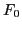

Next: Phase mixing and linear Up: Self-consistent-field simulation of linear Previous: One-dimensional Vlasov-Poisson equations
The reduced equilibrium distribution function  satisfies the
normalization condition
 ,
where the number density of electrons. Denote the thermal velocity of
the equilibrium distribution by . Then Eq. (70) can be written
,
where the number density of electrons. Denote the thermal velocity of
the equilibrium distribution by . Then Eq. (70) can be written
| (72) |
| (74) |